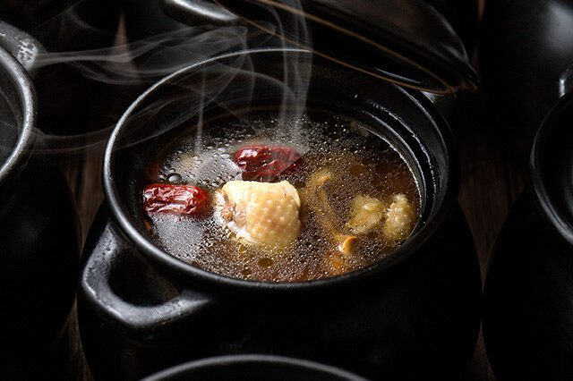
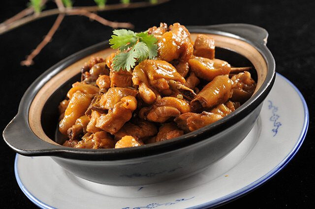
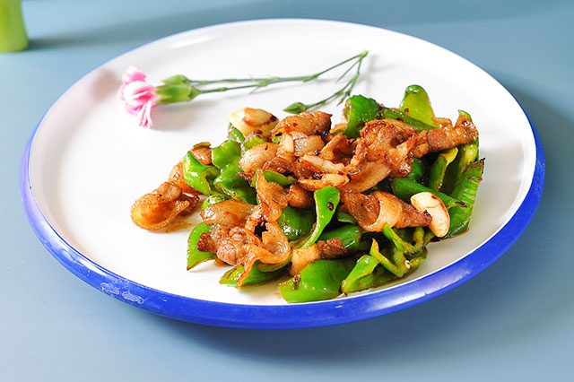
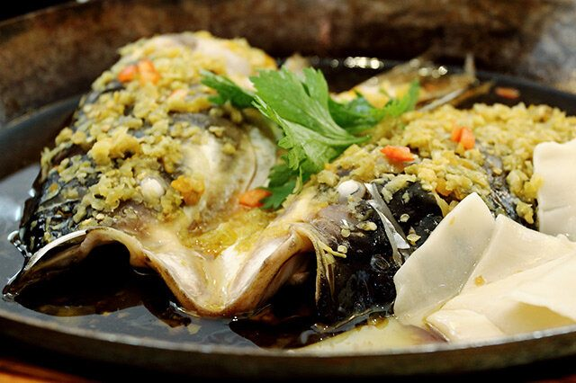
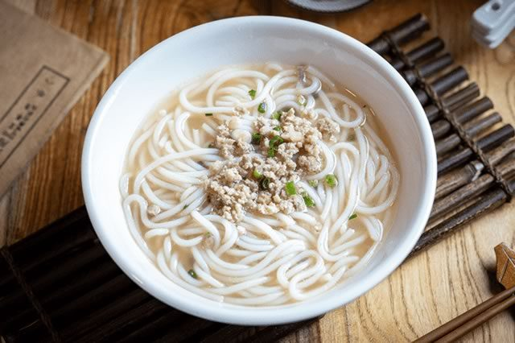

CHAPTER 陆 · FLAVOR
瓦罐煨汤 · 三杯鸡香 · 粉蒸软糯 · 藜蒿清香
Flavor · Reading Order
08 entries in order
赣菜鲜辣咸香、乡土味浓，自成一派。从清晨的一盅瓦罐汤、一碗拌粉，到宴席上的三杯鸡、粉蒸肉——江西人的乡愁，都在这口里。




看到这里，是不是已经饿了？快回到首页，在留言板告诉我们你最想念的江西味道 —— 去留言